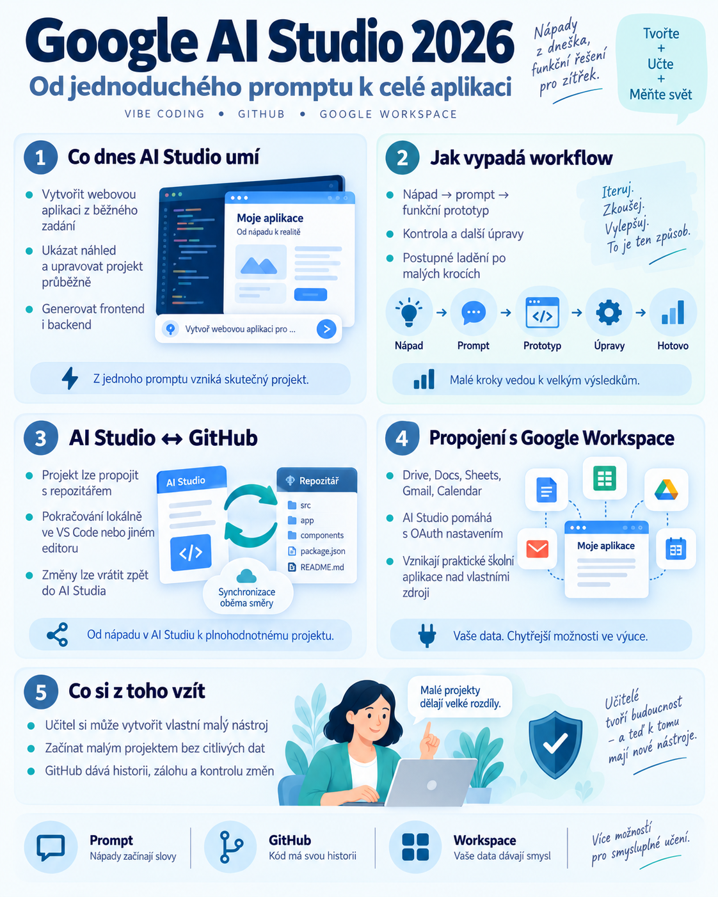

{kind=link}

Google AI Studio se během roku 2026 výrazně změnilo. Původně sloužilo především k testování modelů Gemini, promptů a API. Dnes nabízí také prostředí pro tvorbu celých aplikací pomocí běžného jazyka.
Učitel může popsat svůj nápad, vytvořit funkční prototyp, propojit projekt s GitHubem a pokračovat v jiném vývojovém prostředí. Pro tvorbu menších výukových aplikací je to důležitý posun.
AI Studio už není jen místo pro prompty
V režimu Build lze běžným jazykem popsat požadovanou aplikaci. Například:
AI Studio vytvoří kód i funkční náhled. U webových aplikací může vytvářet frontend a serverovou část. Dokumentace uvádí React jako výchozí frontend a Node.js pro serverovou část. Už nejde jen o vygenerování jednoho HTML souboru.
Vibe coding v praxi
Učitel nemusí začínat studiem celého programovacího frameworku. Může postupovat po malých krocích:
Například:
- „Přidej tlačítko pro další otázku.“
- „Po deseti otázkách zobraz skóre.“
- „Přidej náročnější úroveň.“
- „Uprav rozložení pro mobilní telefon.“
Důležité je kontrolovat každý krok a nenechat AI vytvářet velké množství funkcí najednou bez průběžného testování.
Uvnitř AI Studia pracuje agent
Build mode využívá agentní infrastrukturu, která udržuje kontext projektu a dokáže koordinovat změny napříč více soubory. To je rozdíl proti jednoduchým generátorům izolovaných úryvků kódu.
Při přidání nové funkce může být například potřeba upravit uživatelské rozhraní, serverovou logiku i konfiguraci. Agent může tyto související změny řešit v rámci jednoho projektu.
Ani v tomto případě ale neplatí, že automaticky vytvořený kód je bezchybný.
AI Studio a GitHub
Jednou z nejzajímavějších možností je obousměrná synchronizace s GitHubem. Projekt lze vytvořit v AI Studiu a propojit s repozitářem.
Následně je možné pokračovat lokálně například ve VS Code, Cursoru nebo jiném editoru a změny vracet přes GitHub zpět do AI Studia.
To je významné hlavně pro dlouhodobější projekty. Aplikace už není uzavřená v jediném AI nástroji.
Proč je GitHub důležitý
GitHub může učiteli pomoci jako:
- historie změn;
- záloha projektu;
- propojení několika vývojových nástrojů;
- způsob kontroly konkrétních úprav;
- možnost návratu ke starší verzi.
Při práci s AI agentem je velmi užitečné vědět, co se mezi dvěma verzemi změnilo. Pokud AI něco poškodí, lze problém snadněji dohledat a opravit.
Import existujícího projektu
AI Studio umožňuje také import projektu z GitHubu. To je užitečné ve chvíli, kdy aplikace původně vznikla v jiném prostředí. Není potřeba automaticky vytvářet nový projekt od začátku.
Před propojením však zkontrolujte stav repozitáře a rozpracované změny.
Propojení s Google Workspace
Google AI Studio podporuje integrace s API Google Workspace, například:
- Drive;
- Docs;
- Sheets;
- Gmail;
- Calendar.
Dokáže pomáhat s potřebnou konfigurací a přihlašovacím tokem. Pro učitele tak vznikají možnosti vytvářet aplikace nad vlastními schválenými zdroji.
Dostupnost konkrétní integrace ovšem neznamená, že aplikace automaticky získává právo používat všechna školní data. Přístup musí odpovídat účelu, autorizaci uživatele a pravidlům organizace. Každý uživatel autorizuje přístup ke svému účtu a aplikace má získat jen konkrétní potřebná oprávnění.
Co by si mohl vytvořit učitel
Generátor pracovních listů
Aplikace využije vybrané zdroje a připraví návrh procvičování, otázky nebo různé úrovně obtížnosti.
Přehled anonymních výsledků
Aplikace pracuje s anonymizovanými daty v Google Sheets a vytváří přehledy obtížných témat.
Učitelský plánovač
Aplikace propojí dostupný tematický plán, kalendář a výukové podklady.
Procvičování slovní zásoby
Učitel vloží slovíčka a aplikace vytváří jednoduché úlohy, vyhodnocení a další procvičování.
API klíče a bezpečnost
Nové aplikace využívající Gemini API mohou v AI Studiu pracovat s API klíčem uloženým na serverové straně. To pomáhá zabránit jeho nechtěnému zveřejnění v kódu prohlížeče.
Při exportu a nasazení mimo AI Studio je však potřeba správně nastavit prostředí a tajné klíče. Klíče nikdy neukládejte přímo do veřejného repozitáře nebo klientského JavaScriptu.
Pozor na provozní náklady
Funkční prototyp automaticky neznamená bezplatný provoz. Pokud aplikaci používají další lidé, mohou se jejich požadavky započítávat do API limitů nebo nákladů vlastníka projektu.
Před sdílením se třídou proto ověřte model, limity, cenu a způsob účtování. Stejně důležité je zkontrolovat, jaká data aplikace ukládá a zda potřebuje všechna požadovaná oprávnění.
První projekt pro učitele
Začněte jednoduchou aplikací bez osobních údajů. Například:
Pak postupně přidávejte funkce. Nejdřív ověřte základní procvičování, potom další úroveň a teprve následně složitější možnosti.
Doporučený workflow
- Vytvořit malý prototyp v AI Studiu.
- Ověřit základní funkčnost.
- Uložit stabilní verzi na GitHub.
- Pokračovat v úpravách v AI Studiu nebo lokálně.
- Zkontrolovat rozdíly mezi verzemi.
- Otestovat aplikaci s malou skupinou.
- Teprve potom ji nasadit pro širší použití.
Závěr
Google AI Studio ukazuje, jak se vibe coding posouvá od jednorázového generování kódu k dlouhodobější práci na projektu. Učitel může vytvořit aplikaci z běžného popisu, propojit ji s GitHubem, upravovat ji v dalších nástrojích a využít podporované služby Google Workspace.
Nemusí se z něj stát profesionální programátor. Stále ale potřebuje umět definovat problém, rozdělit práci na malé kroky, kontrolovat výsledky a rozumět základním bezpečnostním pravidlům.
AI snižuje technickou bariéru. Odpovědnost za výsledný nástroj zůstává na člověku.